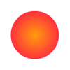
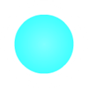
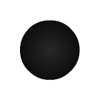
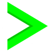

Le fonctionnement des orbes et des pads
Les orbes
Les orbes sont activées lorsqu'elles sont touchées par le joueur et qu'il a cliqué quand l'icône était sur l'orbe.
Les pads
Les pads sont activés lorsqu'ils sont touchés par le joueur.
L'orbe Jaune
L'orbe jaune fait sauter le joueur quand elle est activée.

Le pad Jaune
Le pad jaune fait sauter le joueur quand il est touché.
l'orbe rose
l'orbe rose fonctionne de la même manière que l'orbe jaune, mais avec un saut moins puissant.

Le pad rose
Le pad rose fonctionne de la même manière que le pad jaune, mais avec un saut moins puissant.
l'orbe rouge
l'orbe rouge fonctionne de la même manière que l'orbe jaune, mais avec un saut plus puissant.

Le pad rouge
Le pad rouge fonctionne de la même manière que le pad jaune, mais avec un saut plus puissant.
l'orbe bleu
l'orbe bleu change la gravité du joueur quand elle est activée.

Le pad bleu
Le pad bleu change la gravité du joueur quand il est touché.
l'orbe verte
l'orbe verte est une variante de l'orbe bleu, mais avec un petit saut quand elle est activée.
Cette orbe est un peu le rassemblement de l'orbe bleu et de l'orbe rose, ou de l'orbe rose et du portail de gravité* (le vert).

L'orbe verte n'a pas de pad associé.
* : "Le portail de gravité" est expliqué dans cette page.
l'orbe noire
l'orbe noire plaque le joueur au sol ou au plafond selon la gravité quand elle est activée.

L'orbe noire n'a pas de pad associé.
la dash orbe verte
la dash orbe verte est une orbe spéciale, car quand elle est activée, le joueur dash* dans les airs jusqu'à ce que le joueur relâche le clic.

La dash orbe verte n'a pas de pad associé.
* : Le "dash", c'est quand le joueur prend une dash orbe, c'est-à-dire qu'il se déplace en ligne droite peu importe la gravité, et uniquement si le joueur a cliqué sur la dash orbe et qu'il maintient le clic.
la dash orbe rose
la dash orbe rose fonctionne de la même manière que la dash orbe verte, sauf qu'elle change la gravité du joueur après le dash.
La dash orbe rose n'a pas de pad associé.
l'orbe spider
l'orbe spider fonctionne comme un clic de la spider*.

Le pad spider
Le pad spider fait la même chose que l'orbe spider quand il est touché.
* : "la spider" est un mode de jeu expliqué dans cette page.
la trigger orbe
la trigger orbe active un trigger* quand elle est activée.

La trigger orbe n'a pas de pad associé.
* : un "trigger" est un objet qui permet de modifier plein de choses dans le niveau, et c'est expliqué dans cette vidéo YouTube du youtuber Astrum-__-.
la teleporte orbe
la téléporte orbe téléporte le joueur à l'endroit indiqué dans les paramètres de l'orbe (dans l'éditeur).
Elle fonctionne de la même manière que le trigger de téléportation*.

La teleporte orbe n'a pas de pad associé.
* : le "trigger de téléportation" est un trigger qui permet de téléporter le joueur à un emplacement choisi dans le niveau ; il est expliqué dans cette vidéo YouTube du youtuber YcreatorGoal.
Pour en savoir plus
Autre description